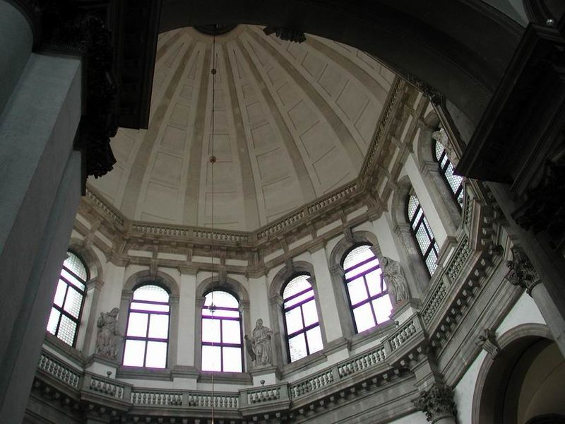

1630 年大瘟疫夺走近五万人后，共和国向圣母许愿建堂。巴尔达萨雷·隆盖纳（时年 30 出头）以八角形平面 + 大涡卷 + 巨型穹顶的回答征服了评审--工程持续 56 年，他本人没能看到完工。今天它与海关大楼组成大运河口的“城市舞台”，是威尼斯被拍摄最多的剪影。
看点路线
Il Percorso
- 1从学院桥西侧或圣马可湾水面看全景--“王冠”的最佳角度
- 2八角厅环形动线：绕一圈回到入口
- 3圣器室：丁托列托《迦拿婚宴》+ 提香天顶画
- 411 月 21 日 Salute 节：临时桥跨大运河，市民赤足过桥
建筑看点
La Salute · 6 个细节

八角形平面与“王冠”穹顶
中央穹顶立于八角厅之上，四周小穹顶环绕--朝圣教堂的经典原型。隆盖纳自述：教堂的形式是“为纯洁的童女加冕的王冠”。
大涡卷
穹顶鼓座与低矮体量之间用巨大的涡卷过渡--这一手法被欧洲巴洛克教堂反复引用，成为连接“高与低”的经典解决方案。
“船首”台阶
入口的宽大台阶如船首破水--威尼斯人读作海神隐喻：教堂是泊在大运河口的船。涨潮时水漫第一级台阶，效果加倍。

八角厅内部
环形朝圣动线：绕一圈回到入口。地面大理石星形图案与穹顶呼应--朝圣的几何学。光从看不见的高窗倾泻，白墙如帆。
圣器室的名画
丁托列托《迦拿的婚宴》（1561）占据整墙--他最大篇幅的场景画之一；提香的两幅天顶圆画（《大卫与歌利亚》《该隐与亚伯》）也在同一空间。
11 月 21 日的赤足桥
每年 Salute 节，临时桥跨大运河连接圣马可区与教堂：全城市民（许多赤足）过桥感恩，传统食物是 castradina（腌制羊肉浓汤）。三百多年从未中断。
历史故事
Le Storie
壹1630：又一场瘟疫
1629-31 年的大瘟疫夺走威尼斯约 4.6 万人（约占人口三分之一）。1630 年 10 月，元老院向圣母许愿：瘟疫止息，必建一殿谢恩。
一年后疫情退去，共和国兑现承诺--在海关大楼旁边的大运河口择址建堂。这里正是“进城的船第一眼看到的地方”：感恩的广告位选在全城最贵的地段。
这座教堂从此有了一个功能性的名字：Salute--“健康”。
贰三十岁出头的竞赛赢家
设计竞赛吸引了多位名家，最终胜出的是圣索维诺的再传弟子巴尔达萨雷·隆盖纳（Baldassare Longhena）--当时年仅三十出头。
他在给评审的陈述中写道：这座教堂的形式是“为纯洁的童女加冕的一顶王冠”--八角平面、层层收分、穹顶为冠。评审被打动的不止是方案，还有这份把建筑与神学焊在一起的修辞。
隆盖纳为这座教堂工作了余生五十一年--他 1682 年去世时，立面与雕塑仍未完成。
叁115 万根木桩
工程档案记录了基础打桩的数量：约 115 万根橡木与赤杨桩，密密麻麻钉入 1.5 米深的淤泥层--在缺氧环境中，这些木桩千年不烂，反而随时间矿化得越来越硬。
整个威尼斯就是坐在这样一片“人造森林”上。安康圣殿是这一工程传统的极致展示：一座巴洛克巨构的重量被百万根桩温柔地传进了泻湖。
涨潮时水漫入口台阶的第一级--建筑的“船感”是刻意为之：它确实像一艘泊稳了的王冠之船。
肆大涡卷的“传染力”
隆盖纳在穹顶鼓座与低矮的八角体量之间放置的大涡卷（volutes），是巴洛克建筑史上被引用最多的细节之一--它优雅地解决了“高与低怎么过渡”的立面难题。
此后欧洲无数教堂与宫殿的立面抄用这一手法（从罗马到德累斯顿）。巴洛克之所以叫“巴洛克”：一种会自我复制的语汇。
站在 Punta della Dogana 看它的侧面：涡卷的曲线与水面的波纹天然合拍--这栋建筑是为水设计的。
伍画家们的宠儿
从卡纳莱托到透纳再到莫奈，三个世纪的名画家都反复画过安康圣殿：它是大运河口的“主角脸”。
莫奈 1908 年冬在威尼斯住了一个多月，从圣乔治岛的方向画了多幅圣殿的光影变奏--其中一幅 2018 年在伦敦拍了超过 2000 万英镑。
你的手机举向它的那一刻，加入了一条三百年长的取景队列。
陆11 月 21 日的赤足桥
每年 11 月 21 日 Salute 节：一座临时桥跨过大运河连接圣马可区与教堂，全城市民--许多赤足--过桥感恩。这个仪式从 1630 年代延续至今，从未中断。
节日传统食物是 castradina：一种腌制羊肉浓汤--据说源自瘟疫封锁期间朱代卡岛民接济城内的故事。
如果行程含 11 月下旬：这是“游客的威尼斯”与“威尼斯人的威尼斯”重叠的一天。
柒圣器室的丁托列托与提香
八角厅右侧的圣器室藏着两件惊喜：丁托列托《迦拿的婚宴》（1561）占据整墙，他最大篇幅的场景画之一；提香的两幅天顶圆画《大卫与歌利亚》《该隐与亚伯》在同一空间的天花上。
一间房间里同时看两位威尼斯巨匠的“命题作文”--丁托列托的戏剧 vs 提香的雕塑感--比美术馆里的对照更亲密。
记得带 €0.50 硬币：投币亮灯才能看清画面细节。
捌海关大楼与“三联画”构图
圣殿旁边的 Punta della Dogana（海关大楼，17 世纪）是当年对进城货物征税的“国门”--塔顶的 fortune 铜球转动指示风向。
2009 年，建筑师安藤忠雄把这座废置的海关改造为当代美术馆（Pinault 收藏）--古建 + 极简混凝土的组合成为威尼斯双年展之外常年艺术据点。
安康圣殿 + 海关尖塔 + 大运河口组成全威尼斯最经典的“三联画”构图--在学院桥或圣马可湾上一举收齐。
玖八角厅的几何
八角形平面源自早期基督教的朝圣教堂（如拉文纳的圣维塔莱）：信徒绕中央圣坛环形行进--动线本身即仪式。
隆盖纳在地面铺了放射状的大理石星形图案，与穹顶的几何呼应：低头看地、抬头看顶，两个宇宙互为镜像。
空间的声学也经过设计：轻声说话的混响恰到好处--这座房间是被“调过音”的。
拾隆盖纳的另一件遗产
主持安康圣殿的同时，隆盖纳还设计了雷佐尼科宫（Ca' Rezzonico，大运河上的巴洛克巨府，今为 18 世纪威尼斯博物馆）--两者并列为“威尼斯巴洛克的双塔”。
他一生几乎只服务于这一座城市：圣殿五十年 + 宫殿与教堂无数。他死后葬礼简朴，墓地在岛外--威尼斯最伟大的巴洛克建筑师没有给自己留下一座纪念碑。
安康圣殿就是他的纪念碑：一顶他三十岁时许诺、用一生完成的王冠。
参观贴士
Consigli Pratici
- 最佳机位：学院桥西侧（黄昏顺光）、圣马可湾水上巴士船行中、Punta della Dogana 尖端
- 教堂弥撒时段（早晨与正午）关闭，下午参观最稳妥
- 圣器室需投币亮灯（€0.50）看丁托列托
- 与海关大楼（Punta della Dogana，当代美术馆）联游--它就在隔壁
顺路同游
Da Non Perdere